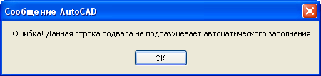

В геодезии вообще и мне по работе в часности требуется построение приличного количества профилей как по общему числу так и разнообразию таковых. В AutoCAD Civil 3D есть довольно широкий функционал по созданию разлочных профилей и разрезов. Все хорошо и обновляются они автоматом и насторить можно довольно широко. Проблема в том что не достаточно широко и есть моменты которые я им простить никак не могу... Вполне возможно (и наверняка это так и есть) я просто не знаю всего на что способны профиля в Civil, но когда я ввязался в настройку подгонку их под себя и "нашу" геодезию, понял что все это такое крутое и навороченое мне в общем то не очень и нужно, если кто то считает что ему то как раз нужно покруче, пусть погуглит по поводу "Пакет адаптации AutoCAD Civil 3D" и выяснит что уже все-все ГОСТы СНиПы в Civil уже есть и ничего выдумывать не надо и дальше читать не стоит.
Для остальных которым не хочется вникать в премудрости Autodesk хочу обрадовать: Вам придется вникать в мои примудрости :) но их я смею надеятся будет поменьше.
Когда задумывался мой профиль основная философия при разработке была "ткнуть два раза профиль и готов", а потом "ткнуть еще два раза и он оформлен" с тех пор уже много что поменялось, профиль обрастает настройками, но стараюсь чтобы меньше движений отделяло меня от конечного продукта (готового профиля). Может не все гладко но я открыт для предложений.
Ну приступим. Для построения профиля абосолютно необходимо две вещи:
Первое это ось трассы вдоль которой будем строить профиль, эта ось должна быть представлена одной сплошной полилинией (можно 2d или 3d)
Второе это отметки которые нужно нанести на профиль отметки могут быть в разных видах: 3d полилиния отметки вершин которой будут спроецированы на ось трассы и нанесены на профиль в виде полилинии, цвет 3d полилинии будет перенесен на полилинию на профиле, поверхность (имеется в виду civil'овская поверхность) и тогда на профиль будет нанесена полилиния с вершинами в местах пересечения оси трассы с треугольниками поверхности, остальные варианты наносят на профиль точечные метки определенной отметки материалом для меток могут служить: COGO точки, тексты с отметкой в содержимом и мультивыноски типа "подпись" также с отметкой в содержимом. Пример содержимого "123.45 верх трубы" - отметка пробел описание
Резюмируем для профиля надо полилиния оси трассы и отметки в каком нибудь виде.
Запускаем команду Создать профиль.
В командной строке видим предложение указать ось трассы
Указываем видим окно параметров профиль который будем создавать
По порядку что за чем:
Название - уникальное (в пределах этого документа) имя профиля, в одном чертеже не может быть двух профилей с одним названием
Вид профиля - выпадающий список с настроеными видами профилей (подвалами) как правило на каждую комуникацию свой профиль можно настроить свой но об этом чуть ниже
Числитель вертикального масштаба - целое число отвечающее за вертикальный масштаб профиля.
Числитель горизонтального масштаба - целое число отвечающее за горизонтальный масштаб профиля.
Далее поле Условный горизонт
Галочка Авто отметка УГ позволяет не думать какой условный горизонт будет у профиля при первом добавлении данных на профиль будет вычислена самая низкая отметка и от нее вычислен условный горизонт
Если по каким то причинам нужно построить профиль с каким то определенным условным горизонтом следует голочку снять и в поле Отметка УГ ввести желаемое значение.
Поле Чистое место над УГ в м отвечает за высоту от условного горизонта до самой низкой точки. Учавствует при автоматическом определении условного горизонта.
Галочка Нанести пересечения позволяет программе просматривать содержимое чертежа на счет пересечения комуникаций с осью трассы. Комуникации распознаются по типу линии и наносятся на профиль. Какому типу линии какая подпись соответствует можно посмотреть и настроить нажав кнопку Настроить.
Галочка Подписать точки предписывает искать круглые мультивыноски которые указывают на вершины оси трассы и если таковые обнаружены подписать в графу Номера точек, если таковая имеется в профиле.
Галочка Наносить углы поворота рисует условные обозначения направления и величины поворота оси трассы
Поле Начальный пикет позволяет задать первый пикет профиля. Имеет смысл задавать значение если в используемом профиле есть графа Пикеты. Задавать начальный пикет можно как в метрах например 123.12 так и в пикетах 1+23.12.
Теперь о видах профиля все виды какие есть в выпадающем списке можно редактировать или создавать свои новые. Для этого нужно в выпадающем списке выбрать нижнюю строку Редактировать
Поле Вид профиля отвечает за манипуляции с видами профиля.
В выпадающем списке выбираем вид профиля который будем редактировать.
Кнопка Создать позволяет создать новый вид профиля, имя профиля не может повторяться.
Кнопка Переименовать периименовывает текущий профиль, новое имя не может повторять существующие.
Кнопка Удалить удаляет текущий профиль
Поле Содержимое подвала позволяет отредактировать строки подвала профиля
Поле разделено на три части в левой части отображается содержимое подвала текущего вида профиля, в правой стандартные строки которые можно добавлять в текущий вид профиля и в середине кнопки управления этими списками
Содержимое левого списка соответствует содержимому подвала при создании профиля
В правом списке содержатся все элементы из которого состоит левый. Как набор материалов для создания.
Кнопки по порядку
Добавить - добавляет выбранный элемент в правом списке под выделеный элемент в левом списке
Вверх/Вниз - позволяет перемещать выбранный элемент в левом списке вверх и вниз по списку
Редактировать - открывает окно редактирование параметров элемента в левом списке
Удалить - удаляет выбранный элемент в левом списке
Редактировать - открывает окно редактирование параметров элемента в правом списке
Поле Параметры текущего вида профиля содержит общие параметры вида профиля
Галочка Вставить линейку отвечает за вставку линейки отметок на профиль. Если галочка стоит то линейка будет вставлена при первом добавлении высотных данных (точек, линий) на профиль
Высота текстов заголовков в мм - отвечает за размер текста в заголовках подвала
Ширина блоков заголовков в подвале в мм - даже добавить нечего
Расстояние от линейки до начала профиля в мм - зазор между началом профиля и линейкой (правым краем блока заголовков)
Текстовый стиль профиля - текстовый стиль которым отибражаются все текстовые элементы профиля. Если выбраного текстового стиля нет в текущем чертежа будет использован текущий стиль текста.
Поле Строки описания характеристик профиля содержит параметры оформления профиля выше условного горизонта
Название - в поле можно внести текстовую строку которая будет подписана над блоком зоголовков профиля
Подпись перед вертикальным масштабом - в поле можно ввести текст к которому при нанесении на профиль добавляется значение вертикального масштаба
Подпись перед горизонтальным масштабом - в поле можно ввести текст к которому при нанесении на профиль добавляется значение горизонтального масштаба
Подпись перед условным горизонтом - в поле можно ввести текст к которому при нанесении на профиль добавляется значение отметки условного горизонта
Высота текста пересечек в мм - при нанесении пересечек на профиль это значение будет использоваться в высоте шрифта текста.
Чисел после запятьй в выносках - при использовании команды определения отметка на профиле значение будет использована для отображения отметки с определенной точностью.
При нажатии ОК изменения сделаные в этом окне сохраняются во внешнем файле и могут быть использованы в других чертежах. По этой же причине отменить изменеия не получится средствами AutoCAD. Для возвращения к значениям по умолчанию следует использовать команду Сброс пользовательских данных.
После всех требуемых настроек давим ОК и получаем указание в командной строке на выбор точки вставки профиля

Указаная точка будет располагаться в верхнем правом углу блока заголовков, как раз там от куда возможно будет расти линейка

Получаем заготовку подвала профиля. Длинна горизонтальных линий соответствует длинне трассы плюс отступ от линейки. Теперь надо наполнить профиль высотами. Для этих целей можно использовать команду Добавить линию на профиль
получаем запрос на выбор полилинии или поверхности
полилиния может располагаться поверх оси трассы или идти поралельно, в последнем случае отметки с вершин будут снесены на ближайший элемент (линия вершина)оси трассы
после выбора смотрим на профиль и видим что добавилась линия тем же цветом что и выбранная (но в текущем слое), вычислился условный горизонт и появилась линейка с подписью средней отметки
Как вариант можно использовать команду Добавить точку на профиль
Все аналогично только выбираются тексты, COGO точки или мультивыноски. результат будет выглядеть примерно так
С помощью этих двух команд переносим отметки с плана на профиль. Вообще для работы в пространстве профиля есть еще команды типа Измерить превышение, Отложить превышение, Нанести пересечку на профиль и другие. Более подробно о них напишу как нибудь попозже, наверно.
Будем считать профиль мы построили. Теперь надо, на его основе, заполнить подвал. Для этого основной инструмент команды Вычислить линию на профиле.
Команда работает в два клика: указываем полилинию на профиле, указываем заполняемую строку подвале(точку между линиями строки). На картинке пример заполнения строки с отметками.
Таким же образом заполняются строки с рассояниями и уклонами. Программа сама определяет чем заполнить выбраную строку (тип строки настраивается в виде профиля) и только при выборе строки с Глубиной заложения программа запросит еще одну полилинию профиля чтобы вычислить разницу между ними.
Когда потребуется нарисовать вертикальные линии на профиле выбирать следует не строку подвала, а ткнуть в любом месте выше условного горизонта.
При попытке заполнить строку для которой это невозможно будет выведено сообщение с ошибкой.
Существует также кнопка Нанести измерение на профиле работающая по тому же принципу но только с одним измерением длинна, уклон, превышение...
Кнопка Определить отметку на профиле работает только с отметками и только по одной
2012.05.05
updata
Примечание о масштабах.
Профиль чертится таким образом чтобы длина всегда соответствовала 1:1 с планом. Для облегчения чего нибудь пририсовать вручную. Построения и измерения связаные с высотой на профиле выполняются специально сделаными командами: "Измерить превышение, расстояние и уклон", "Отложить превышение или уклон с расстоянием" и др. При печати задается горизонтальный масштаб профиля.
2013.01.09